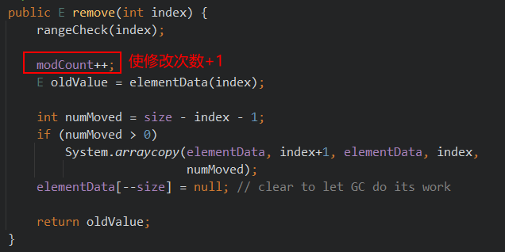

集合¶
1. 集合概述¶
集合是java中提供的一种容器，可以用来存储多个对象数据。
集合对比数组的优势：
- 数组的长度是固定的，不利于数据的增删。集合的长度是可变的。
- 数组中提供的属性和方法较少，不便于进行常用的增删改查操作，集合提供了更丰富的API。
- 数组存储数据的特点单一，即有序的，可重复的。
- 数组中可以存储基本数据类型值，也可以存储对象，而集合中只能存储对象
集合主要分为两大系列：Collection和Map，Collection 表示一组对象，Map表示一组映射关系或键值对。

2. Collection¶
Collection 层次结构中的根接口。Collection 表示一组对象，这些对象也称为 collection 的元素。一些collection 允许有重复的元素，而另一些则不允许。一些 collection 是有序的，而另一些则是无序的。 JDK 不提供此接口的任何直接实现：它提供更具体的子接口（如 Set 和 List、Queue）实现。此接口通常用来传递 collection，并在需要最大普遍性的地方操作这些 collection。 Collection是所有单列集合的父接口，因此在Collection中定义了单列集合(List和Set)通用的一些方法，这些方法可用于操作所有的单列集合。方法如下：
2.1 Collection的常用方法¶
2.1.1 添加元素¶
| 方法名称 | 方法描述 |
|---|---|
| add(E obj) | 添加元素对象到当前集合中 |
| addAll(Collection<? extends E> other) | 添加other集合中的所有元素对象到当前集合中，即this= this ∪ other |
2.1.2 删除元素¶
| 方法名称 | 方法描述 |
|---|---|
| boolean remove(Object obj) | 从当前集合中删除第一个找到的与obj对象equals返回true的元素。 |
| boolean removeAll(Collection<?> coll) | 从当前集合中删除所有与coll集合中相同的元素。即this= this - this ∩ coll |
2.1.3 判断¶
| 方法名称 | 方法描述 |
|---|---|
| boolean isEmpty() | 判断当前集合是否为空集合。 |
| boolean contains(Object obj) | 判断当前集合中是否存在一个与obj对象equals返回true的元素。 |
| boolean containsAll(Collection<?> c) | 判断c集合中的元素是否在当前集合中都存在。即c集合是否是当前集合的“子集” |
2.1.4 其他方法¶
| 方法名称 | 方法描述 |
|---|---|
| int size() | 获取当前集合中实际存储的元素个数 |
| boolean retainAll(Collection<?> coll) | 在调用方保留两个集合相同元素的交集 |
| Object[] toArray() | 返回包含当前集合中所有元素的数组 |
2.2 Collection系列¶

Collection：集合根接口，存储一组对象。
- List：接口，特点是，元素可重复，有序（存取顺序一致）
- ArrayList：底层结构为数组，查询快，增删慢，线程不安全
- LinkedList：底层结构为链表，查询慢，增删快
- Vector：底层结构为数组，线程安全，效率低，不推荐使用
Set：接口，特点是，元素唯一
- HashSet：底层结构为Hash表，查询和增删效率都高
- TreeSet：底层结构为红黑树，查询效率高于链表，增删效率高于数组，元素实现排序
- LinkedHashSet：底层结构为hash表+链表，链表保证元素的有序
3. Map¶
现实生活中，我们常会看到这样的一种集合：IP地址与主机名，身份证号与个人，系统用户名与系统用户对象等，这种一一对应的关系，就叫做映射。Java提供了专门的集合类用来存放这种对象关系的对象，即 java.util.Map
我们通过查看 Map 接口描述，发现 Map
-
Collection 中的集合，元素是孤立存在的（理解为单身），向集合中存储元素采用一个个元素的方式存储。
-
Map 中的集合，元素是成对存在的(理解为夫妻)。每个元素由键与值两部分组成，通过键可以找对所对应的值。
-
Collection 中的集合称为单列集合， Map 中的集合称为双列集合。
-
需要注意的是， Map 中的集合不能包含重复的键，值可以重复；每个键只能对应一个值（这个值可以是单个值，也可以是个数组或集合值）。
3.1 集合元素示意图¶

3.2 Map常用方法¶
3.2.1 添加操作¶
| 方法名 | 方法描述 |
|---|---|
| V put(K key,V value) | 添加一个键值对到Map中 |
| void putAll(Map<? extends K,? extends V> m) | 添加一整个Map到调用方Map中 |
3.2.2 删除¶
| 方法名称 | 方法描述 |
|---|---|
| void clear() | 清除Map中所有元素 |
| V remove(Object key) | 移除Map中指定key的键值对 |
3.2.3 元素查询操作¶
| 方法名称 | 方法描述 |
|---|---|
| V get(Object key) | 根据指定key获取value |
| boolean containsKey(Object key) | 判断是否存在指定key，存在返回true，不存在返回false |
| boolean containsValue(Object value) | 判断是否存在指定value，存在返回true，不存在返回false |
| boolean isEmpty() | 判断map是否为空，Map为空则返回true，否则返回false |
3.2.4 元视图操作¶
| 方法名称 | 方法描述 |
|---|---|
| Set keySet() | 获取 Map键(key)的集合(set) |
| Collection values() | 获取 Map值(value)的集合(collection) |
| Set |
获取键值对的集合set |
3.2.5 其他方法¶
| 方法名称 | 方法描述 |
|---|---|
| int size() | 获取map键值对的个数 |
4. 集合框架总结¶
5. Iterator迭代器¶
5.1 Iterator接口API¶
在程序开发中，经常需要遍历集合中的所有元素。针对这种需求，JDK专门提供了一个接口java.util.Iterator 。 Iterator 接口也是Java集合中的一员，但它与 Collection 、 Map 接口有所不同， Collection 接口与 Map 接口主要用于存储元素，而 Iterator 主要用于迭代访问（即遍历）Collection 中的元素，因此 Iterator 对象也被称为迭代器。
想要遍历Collection集合，那么就要获取该集合迭代器完成迭代操作，下面介绍一下获取迭代器的方
法：public Iterator iterator() : 获取集合对应的迭代器，用来遍历集合中的元素的。
| 方法名称 | 方法描述 |
|---|---|
| public E next() | 返回迭代的下一个元素。 |
| public boolean hasNext() | 如果仍有元素可以迭代，则返回 true。 |
| public void remove() | 通过迭代器删除元素 |
Iterator接口

forEachRemaining方法的默认实现：
default void forEachRemaining(Consumer<? super E> action) {
Objects.requireNonNull(action); // 该方法用于判断参数是否为空，空则抛出NullPointerException异常
while (hasNext())
action.accept(next());
}
5.2 迭代器的简单使用¶
public class IteratorDemo {
public static void main(String[] args) {
// 使用多态方式 创建对象
Collection<String> coll = new ArrayList<String>();
// 添加元素到集合
coll.add("串串星人");
coll.add("吐槽星人");
coll.add("汪星人");
//遍历
//使用迭代器 遍历，每个集合对象都有自己的迭代器
Iterator<String> it = coll.iterator();
// 泛型指的是 迭代出 元素的数据类型
while(it.hasNext()){ //判断是否有迭代元素
String s = it.next();//获取迭代出的元素
System.out.println(s);
}
}
}
注意：在进行集合元素取出时，如果集合中已经没有元素了，还继续使用迭代器的next方法，将会发生java.util.NoSuchElementException没有集合元素的错误。
5.3 迭代器的实现原理¶
Iterator迭代器对象在遍历集合时，内部采用指针的方式来跟踪集合中的元素。
数组实现说明：
初始状态，指针指向0（inde = 0）的位置，可以通过size()方法获取需要迭代的集合元素的个数。
- next()方法：当迭代器调用next()方法时，迭代器先将 arr[index] 的数据取出，使index的值+1，然后将刚刚取出的值返回。
- hasNext()方法：若index的值小于数组长度的值时，返回true，否则返回false
- remove()方法：对于数组来说，有多种实现方式，可以将该索引以后的所有元素往前移动一格（覆盖index所指的元素），相当于移除了。然后使集合的长度-1。
5.4 增强for循环¶
增强for循环(也称foreach循环)是JDK1.5以后出来的一个高级for循环，专门用来遍历数组和集合。
for(元素的数据类型 变量 : Collection集合or数组){
//写操作代码
}
5.4.1 对数组遍历¶
（1）写法¶
@Test
public void test2() {
int[] arr = {234456, 123, 456, 3, 44, 56, 234, 456, 123};
for (int i : arr) {
System.out.print(i + " ");
}
}
（2）实现原理（反编译）¶
public void test2() {
int[] arr = new int[]{234456, 123, 456, 3, 44, 56, 234, 456, 123};
int[] var2 = arr; // 新增遍历数组
int var3 = arr.length; // 新增变量，保存数组长度
// 使用 fori进行遍历
for(int var4 = 0; var4 < var3; ++var4) {
int i = var2[var4]; // 使用i保存指定索引上的值
System.out.print(i + " "); // 输出i
}
}
可以看到，增强for循环对数组进行遍历的原理与 fori循环一致
5.4.2 对集合（Collection对象）进行遍历¶
（1）写法¶
@Test
public void test3() {
List<Integer> list = Arrays.asList(1, 2, 3, 243, 235, 43, 56, 34, 3);
for (Integer integer : list) {
System.out.print(integer + " ");
}
}
（2）实现原理（反编译）¶
public void test3() {
List<Integer> list = Arrays.asList(1, 2, 3, 243, 235, 43, 56, 34, 3);
Iterator var2 = list.iterator(); // 使用迭代器对集合进行遍历
while(var2.hasNext()) {
Integer integer = (Integer)var2.next(); // 取出集合元素
System.out.print(integer + " "); // 输出
}
}
// 不使用泛型的情况
@Test
public void test3() {
List list = Arrays.asList(1, 2, 3, 243, 235, 43, 56, 34, 3);
Iterator var2 = list.iterator();
while(var2.hasNext()) {
Object obj = var2.next();
System.out.print(obj + " ");
}
}
5.5 java.lang.Iterable接口¶
实现了这个接口，允许成为增强For循环的目标
Java 5时Collection接口继承了Iterable接口，因此Collection系列的集合就可以直接使用foreach循环遍历。
Iterable接口的抽象方法：public Iterator iterator(): 获取对应的迭代器，用来遍历数组或集合中的元素的。因此，自定义某容器类型，实现java.lang.Iterable接口，就可以使用foreach进行迭代。
自定义迭代器，实现java.lang.Iterable接口
/**
* 自己实现一个简单的 不可变长List
*/
class MyList {
private String[] arr;
private Integer index;
private Integer size;
public MyList() {
this(5);
}
public MyList(int size) {
this.arr = new String[size];
index = 0;
this.size = 0;
}
public Integer getSize() {
return size;
}
public void add(String element) {
if (isFull()) {
return;
}
arr[size++] = element;
}
public void remove(int index) {
if (isEmpty()) {
return;
}
int moveCount = size - (index + 1);
System.arraycopy(arr, index + 1, arr, index, moveCount);
arr[--size] = null;
}
private Boolean isEmpty() {
return size == 0;
}
private Boolean isFull() {
return !(size < arr.length);
}
@Override
public String toString() {
return "MyList{" +
"arr=" + Arrays.toString(arr) +
'}';
}
public myIterator iterator() {
return new myIterator();
}
class myIterator implements Iterator<String> {
private int index = 0;
@Override
public boolean hasNext() {
return index < size;
}
@Override
public String next() {
if (index < size) {
return arr[index++];
}
throw new IndexOutOfBoundsException("在我的迭代器中数组越界了！！！");
}
}
}
// 测试代码：
@Test
public void test6() {
// 自定义集合类
MyList myList = new MyList(10);
// 添加元素
System.out.println("myList.getSize() = " + myList.getSize());
myList.add("1号");
myList.add("2号");
myList.add("3号");
myList.add("4号");
System.out.println("myList.getSize() = " + myList.getSize());
// 使用自定义集合类的 迭代器进行迭代遍历
MyList.myIterator iterator = myList.iterator();
while (iterator.hasNext()) {
String s = iterator.next();
System.out.println(s);
}
}
/* 测试结果
myList.getSize() = 0
myList.getSize() = 4
1号
2号
3号
4号
*/
所以也不要在foreach遍历的过程使用Collection的remove()方法。否则，要么报异常 java.util.ConcurrentModificationException，要么行为不确定。
5.6 modCount与fail-fast机制（快速失败机制）¶
当使用foreach或Iterator迭代器遍历集合时，同时调用迭代器自身以外的方法修改了集合的结构，例如调用集合的add和remove方法时，就会报ConcurrentModificationException。
public class TestForeach {
public static void main(String[] args) {
Collection<String> list = new ArrayList<>();
list.add("hello");
list.add("java");
list.add("atguigu");
list.add("world");
Iterator<String> iterator = list.iterator();
while(iterator.hasNext()){
list.remove(iterator.next());
}
}
}
如果在Iterator、ListIterator迭代器创建后的任意时间从结构上修改了集合（通过迭代器自身的remove 或 add 方法之外的任何其他方式），则迭代器将抛出 ConcurrentModificationException。因此，面对并发的修改，迭代器很快就完全失败，而不是冒着在将来不确定的时间任意发生不确定行为的风险。（主要考虑到线程安全问题）
快速失败机制的设计原因：在迭代中，每个位置存放着该位置所代表的信息，若集合发生了修改，则有可能使信息发生变化，导致迭代发生不可预估的后果。因此果断抛异常阻止，是最好的方法。
但迭代器的快速失败行为不能得到保证，一般来说，存在不同步的并发修改时，不可能作出任何坚决的保证。快速失败迭代器尽最大努力抛出 ConcurrentModificationException 。因此，编写依赖于此异常的程序的方式是错误的，正确做法是：迭代器的快速失败行为应该仅用于检测 bug。例如：
@Test
public void test1() {
ArrayList<String> list = new ArrayList<>();
list.add("hello");
list.add("java");
list.add("atguigu");
list.add("world");
//以下代码没有发生ConcurrentModificationException异常
Iterator<String> iterator = list.iterator();
while (iterator.hasNext()) {
String str = iterator.next();
if ("atguigu".equals(str)) {
list.remove(str); // 这里实际上调用了 list集合的public boolean remove(Object o)方法
}
}
System.out.println(list);
}
list有两个remove()的重载方法
// 1、参数类型为Object，不带有modCount的修改
public boolean remove(Object o) {
if (o == null) {
for (int index = 0; index < size; index++)
if (elementData[index] == null) {
fastRemove(index);
return true;
}
} else {
for (int index = 0; index < size; index++)
if (o.equals(elementData[index])) {
fastRemove(index);
return true;
}
}
return false;
}
// 2、参数类型为int，带有modCount的重载
public E remove(int index) {
rangeCheck(index);
modCount++; // 此处修改modCount
E oldValue = elementData(index);
int numMoved = size - index - 1;
if (numMoved > 0)
System.arraycopy(elementData, index+1, elementData, index,
numMoved);
elementData[--size] = null; // clear to let GC do its work
return oldValue;
}
这里用到了 modCount 属性，modCount是这个list被结构性修改的次数（The number of times this list has been structurally modified.）。结构性修改是指：改变list的size大小，或者，以其他方式改变他导致正在进行迭代时出现错误的结果。
5.6.1 快速失败（fail-fast）的实现¶
在ArrayList等集合类中都有一个modCount变量。它用来记录集合的结构被修改的次数。
当我们给集合添加和删除操作时，会导致modCount++。（以移除为例）

当我们用Iterator迭代器遍历集合时，创建集合迭代器的对象时，用一个变量记录当前集合的modCount。例如： int expectedModCount = modCount; ，并且在迭代器每次next()迭代元素时，都要检查expectedModCount != modCount ，如果不相等了，那么说明你调用了Iterator迭代器以外的Collection的add,remove等方法，修改了集合的结构，使得modCount++，值变了，就会抛出ConcurrentModificationException。
源码追踪顺序：
ArrayList类 -> 内部迭代器类 -> next方法 -> checkForComodification()

5.6.2 子类使用 fail-fast 迭代器¶
子类使用这个字段是可选的，如果子类希望提供fail-fast迭代器，它仅仅需要在add(int, E),remove(int)方法（或者它重写的其他任何会结构性修改这个列表的方法）中添加这个字段。调用一次add(int,E)或者remove(int)方法时必须且仅仅给这个字段加1，否则迭代器会抛出伪装的ConcurrentModificationExceptions错误。如果一个实现类不希望提供fail-fast迭代器，则可以忽略这个字段。
集合的注意点
- 若集合存储数字，则调用集合的remove方法，移除的是指定索引上的元素。
6.List接口¶
6.1 List接口介绍¶
java.util.List 接口继承自 Collection 接口，是单列集合的一个重要分支，习惯性地会将实现了List 接口的对象称为List集合。
List接口特点：
- List集合所有的元素是以一种线性方式进行存储的，例如，存元素的顺序是11、22、33。那么集合中，元素的存储就是按照11、22、33的顺序完成的）
- 它是一个元素存取有序的集合。即元素的存入顺序和取出顺序有保证。
- 它是一个带有索引的集合，通过索引就可以精确的操作集合中的元素（与数组的索引是一个道理）。
- 集合中可以有重复的元素，通过元素的equals方法，来比较是否为重复的元素。
List集合类中元素有序、且可重复。这里的有序是指集合存取有顺序，而非排序之后的有序。
List集合关心元素是否有序，而不关心是否重复
6.2 List接口中常用方法¶
List作为Collection集合的子接口，不但继承了Collection接口中的全部方法，而且还增加了一些根据元素索引来操作集合的特有方法。
6.2.1 添加元素¶
| 方法名 | 方法说明 |
|---|---|
| void add(int index, E ele) | 添加一个元素到索引指定位置（后面的元素后移） |
| boolean addAll(int index, Collection<? extends E> eles) | 添加一个Collection接口到索引指定位置（后面元素后移） |
6.2.2 获取元素¶
| 方法名 | 方法说明 |
|---|---|
| E get(int index) | 获取指定索引的元素 |
| List subList(int fromIndex, int toIndex) | 获取指定区间[fromIndex,toIndex)元素的List |
6.2.3 获取元素的索引¶
| 方法名 | 方法说明 |
|---|---|
| int indexOf(Object obj) | 获取第一次出现该元素的索引 |
| int lastIndexOf(Object obj) | 获取最后以此出现该元素的索引 |
6.2.4 删除和替换元素¶
| 方法名 | 方法说明 |
|---|---|
| E remove(int index) | 删除指定索引的元素 |
| E remove(Object obj) | 删除指定内容的元素（第一次出现） |
| E set(int index, E ele) | 替换指定位置上的索引 |
说明：
若集合使用泛型存储Integer类型的元素，则有多种情况
代码示例
@Test
public void test2(){
ArrayList<Integer> list = new ArrayList<>();
list.add(1);
list.add(2);
list.add(9);
list.remove(1);
System.out.println("list.remove(1)"+list);
// list.remove(9);
list.remove(new Integer("9"));
System.out.println("list.remove(9)"+list);
}
- 若直接输入基本数据类型，则移除指定索引的元素
- 若使用包装类输入，则移除指定内容的元素
7. ArrayList实现类¶
ArrayList是List接口的典型实现类，底层使用长度可变的数组实现，常用方法都来自Collection和List接口。
ArrayList底层使用数组实现，因此其具有 查询快，但是增加与删除慢 的特点

Vector底层也使用数组，但是线程安全，效率低，不推荐使用。
7.1 源码分析：¶
7.1.1 空参构造方法 new ArrayList<>();¶
public ArrayList() {
this.elementData = DEFAULTCAPACITY_EMPTY_ELEMENTDATA;
}
只做了赋值操作，其中Object[] elementData 为数组，DEFAULTCAPACITY_EMPTY_ELEMENTDATA 为空数组

7.1.2 int类型参数构造方法 new ArrayList<>();¶
public ArrayList(int initialCapacity) {
if (initialCapacity > 0) {
this.elementData = new Object[initialCapacity];
} else if (initialCapacity == 0) {
this.elementData = EMPTY_ELEMENTDATA;
} else {
throw new IllegalArgumentException("Illegal Capacity: "+ initialCapacity);
}
}
判断传入参数的值，大于0就用该值作为数组的初始容量。等于0回到空参构造器，小于0就抛出非法参数异常
7.1.3 添加元素方法 public boolean add(E e) （懒加载初始化）¶
public boolean add(E e) {
ensureCapacityInternal(size + 1); // 检查数组是否需要扩容
elementData[size++] = e; // 新增元素实际操作
return true;
}
size：当前ArrayList的元素个数（The size of the ArrayList (the number of elements it contains)）
- 进入ensureCapacityInternal(size + 1)，也就是说把当前集合元素的个数+1传入该方法
private void ensureCapacityInternal(int minCapacity) {
ensureExplicitCapacity(calculateCapacity(elementData, minCapacity));
}
-
该方法先进入calculateCapacity(elementData, minCapacity)方法（字面意思计算容量）
private static int calculateCapacity(Object[] elementData, int minCapacity) { if (elementData == DEFAULTCAPACITY_EMPTY_ELEMENTDATA) { return Math.max(DEFAULT_CAPACITY, minCapacity); } return minCapacity; }此处的 DEFAULT_CAPACITY 是默认容量，为10。该方法返回数值较大的那个参数（与默认值比）。
-
进入ensureExplicitCapacity方法
private void ensureExplicitCapacity(int minCapacity) { modCount++; // overflow-conscious code if (minCapacity - elementData.length > 0) grow(minCapacity); // 具体的扩容操作 }首先，使修改数+1，其次，若集合元素个数 > 数组容量，则执行grow(minCapacity) 扩容操作
-
grow(minCapacity) 扩容操作
private void grow(int minCapacity) { // overflow-conscious code int oldCapacity = elementData.length; // 使旧容量等于现在数组长度 int newCapacity = oldCapacity + (oldCapacity >> 1); // 使新容量为旧容量的1.5倍 // 判断该两个溢出问题（MAX_ARRAY_SIZE的值为Integer.MAX_VALUE - 8） if (newCapacity - minCapacity < 0) newCapacity = minCapacity; if (newCapacity - MAX_ARRAY_SIZE > 0) newCapacity = hugeCapacity(minCapacity); // minCapacity is usually close to size, so this is a win: // 使用 数组工具类 Arrays.copyOf方法，将旧容量的数组元素拷贝到新容量的数组中，并返回 elementData = Arrays.copyOf(elementData, newCapacity); }
-
-
执行完成上述操作后，使 当前size 的元素为传入的值
-
返回true
7.1.4 移除元素方法 （索引） public E remove(int index)¶
public E remove(int index) {
rangeCheck(index); //检查范围是否合法：index小于size即为合法索引
modCount++; // 修改次数 +1
E oldValue = elementData(index); // 保留删除的元素，以便返回
// 思想：使用后面的元素将该索引位置的元素覆盖，然后将最后的元素置为null，即实现了删除操作
int numMoved = size - index - 1; // 计算需要移动的元素个数
if (numMoved > 0)
System.arraycopy(elementData, index+1, elementData, index,numMoved); // 移动元素
elementData[--size] = null; // 将最后的元素置为null
return oldValue;
}
7.1.5 移除元素方法 （索引） public E remove(int index)¶
public boolean remove(Object o) {
/*
分两种情况，
1. 若传入的值为null，则 “快速移除” null位置的值
2. 若传入的值不为null，则 “快速移除” 与参数匹配的值
*/
if (o == null) {
// 参数为null，找null的位置 并执行 fastRemove()方法
for (int index = 0; index < size; index++)
if (elementData[index] == null) {
fastRemove(index);
return true;
}
} else {
// 参数为null，找匹配参数的位置 并执行 fastRemove()方法
for (int index = 0; index < size; index++)
if (o.equals(elementData[index])) {
fastRemove(index);
return true;
}
}
return false;
}
快速移除方法：private void fastRemove(int index)，跳过边界检查及返回值
/*
把后面的值移到前面即可。
*/
private void fastRemove(int index) {
modCount++;
int numMoved = size - index - 1;
if (numMoved > 0)
System.arraycopy(elementData, index+1, elementData, index,
numMoved);
elementData[--size] = null; // clear to let GC do its work
}
8. LinkedList实现类¶
LinkedList是List接口的另一个常用实现类。LinkedList底层存储数据使用链表结构(双向链表)，特点：增删快，查询慢。
8.1 双向链表示意图¶

Node对象表示一个完整的元素节点：
private static class Node<E> {
E item;//数据元素
Node<E> next;//下一个元素节点
Node<E> prev;//上一个元素节点
Node(Node<E> prev, E element, Node<E> next) {
this.item = element;
this.next = next;
this.prev = prev;
}
}
8.2 LinkedList常用方法¶
8.2.1 LinkedList的构造方法：¶
- 空参，构造一个空集合
public LinkedList() {
}
- 传入一个集合接口，调用空参，然后添加所有（addAll）
public LinkedList(Collection<? extends E> c) {
this();
addAll(c);
}
8.2.2 LinkedList特有的方法（首、尾元素的操作）¶
| 方法名称 | 方法说明 |
|---|---|
| void addFirst(Object obj ) | 链表头添加元素 |
| void addLast(Object obj ) | 链表尾添加元素 |
| Object getFirst() | 获取链表头元素 |
| Object getLast() | 获取链表尾元素 |
| Object removeFirst() | 移除链表头元素 |
| Object removeLast () | 移除链表尾元素 |
8.3 链表实现的数据结构¶
- 基于链表实现的抽象数据结构-队列：先进先出（FIFO）
| 方法名称 | 方法说明 |
|---|---|
| boolean offer(Object obj) | 入队 |
| Object peek() | 出队 |
- 基于链表实现的抽象数据结构-栈：后进先出（LIFO）
| 方法名称 | 方法说明 |
|---|---|
| void push(E e) | 压栈 |
| E pop() | 弹栈 |
8.4 源码分析¶
8.4.1 静态节点类 private static class Node<E>¶
private static class Node<E> {
E item; // 具体数据
Node<E> next; // 指向后一个元素的指针
Node<E> prev; // 指向前一个元素的指针
Node(Node<E> prev, E element, Node<E> next) {
this.item = element;
this.next = next;
this.prev = prev;
}
}
8.4.2 添加元素到尾部：void linkLast(E e)¶
/**
* Links e as last element.(将元素添加到尾部)
*/
void linkLast(E e) {
final Node<E> l = last; // 将之前最新节点 临时存为变量 l
final Node<E> newNode = new Node<>(l, e, null); // new个节点，保存传入的数据，指定前驱节点为l（之前最新的节点），将后驱节点置空
last = newNode; // 更新最新节点：使最新节点为刚刚新建的节点
if (l == null) // 如果没有前驱节点，说明新建的节点为第一个，则将头节点 = 新建的节点
first = newNode;
else // 若有前驱节点，则把前驱结点后一个节点指定为 newNode
l.next = newNode;
size++; // 链表尺寸+1
modCount++; // 修改次数+1
}
说明：last，first为 节点元素 Node<E>
8.4.3 添加元素到头部：void linkFirst(E e)¶
/**
* Links e as first element.
*/
private void linkFirst(E e) {
final Node<E> f = first; // 将头节点存储为 f
final Node<E> newNode = new Node<>(null, e, f); // new个节点，保存传入的数据，将前驱结点指控，后驱节点为f（之前的头节点）
first = newNode; // 更新头节点：是头节点为刚刚新建的节点
if (f == null) // 没有头节点，说明新建的节点为第一个，则将头节点 = 新建的节点
last = newNode;
else // 有头节点，则将新建的节点设为f（之前头节点）的前驱结点
f.prev = newNode;
size++; // 链表尺寸+1
modCount++; // 修改次数+1
}
8.4.4 添加元素到指定节点之前 void linkBefore(E e, Node<E> succ)¶
void linkBefore(E e, Node<E> succ) {
// assert succ != null; succ为指定节点
final Node<E> pred = succ.prev; // 保存succ的前驱为pred
final Node<E> newNode = new Node<>(pred, e, succ); //new一个节点，保存数据。将pred（succ的前驱）设为新节点的前驱，将succ设为新节点的后驱
succ.prev = newNode; //将succ的前驱指向新节点
if (pred == null) //若succ的前驱为null，则说明 succ为头节点。此时只需要让新节点成为头节点即可
first = newNode;
else //非头节点的情况：将初始状态 succ的前驱节点的后驱指向新节点即可
pred.next = newNode;
size--; // 链表尺寸-1
modCount++; // 修改次数+1
}
8.4.5 删除头节点 private E unlinkFirst(Node<E> f)¶
private E unlinkFirst(Node<E> f) {
// assert f == first && f != null;
final E element = f.item; // 存储当前第一个元素，用于返回
final Node<E> next = f.next; // 存储头元素的下一个元素为next，作为将来的头元素
f.item = null; // 移除头元素的 信息
f.next = null; // help GC 呼叫GC
first = next; // 给头元素赋值：之前的next元素
if (next == null) // 若next为空，则说明整个链表为空，直接使last（最后一个元素）也为空
last = null;
else // 否则使 头元素的前驱结点置空
next.prev = null;
size--; // 链表尺寸-1
modCount++; // 修改次数+1
return element;
}
8.4.6 删除尾节点 private E unlinkLast(Node<E> l)¶
private E unlinkLast(Node<E> l) {
// assert l == last && l != null;
final E element = l.item; // 取出最后一个元素的 数据，准备返回
final Node<E> prev = l.prev; // 获取最后一个元素前的前驱结点 prev
l.item = null; // 将最后一个元素的数据置空
l.prev = null; // help GC 将最后一个元素的前驱节点置空
last = prev; // 让初始状态倒数第二个元素成为last
if (prev == null) // 若当前last为空，则说明只有一个节点，则把头节点也置空
first = null;
else // 否则就把当下最后一个节点的后驱节点置空
prev.next = null;
size--; // 链表尺寸-1
modCount++; // 修改次数+1
return element;
}
8.4.7 删除指定节点（索引）public E remove(int index)¶
public E remove(int index) {
checkElementIndex(index); // 校验索引合法性
return unlink(node(index)); // 具体移除操作
}
查找索引：node(index)，返回指定非空节点的索引（Returns the (non-null) Node at the specified element index.）
Node<E> node(int index) {
// 如果索引比容量的一半小
if (index < (size >> 1)) {
Node<E> x = first; // 从头往后找
for (int i = 0; i < index; i++)
x = x.next;
return x;
// 如果索引比容量的一半大
} else {
Node<E> x = last; // 从后往前找
for (int i = size - 1; i > index; i--)
x = x.prev;
return x;
}
}
具体的移除操作：E unlink(Node<E> x)
/**
* Unlinks non-null node x.
*/
E unlink(Node<E> x) {
// assert x != null;
// 将索引的数据，前驱结点，后驱节点存起来
final E element = x.item;
final Node<E> next = x.next;
final Node<E> prev = x.prev;
// 如果前驱结点为空，则说明该节点为头节点，只要直接将first为该节点的后驱节点
if (prev == null) {
first = next;
// 否则就该节点的前驱结点的next指向该节点的next，然后将该节点的前驱置空
} else {
prev.next = next;
x.prev = null;
}
// 如果后驱结点为空，则说明该节点为尾节点，只要直接将last为该节点的前驱节点
if (next == null) {
last = prev;
} else {
// 否则就该节点的后驱节点的prev设为该节点的prev，然后将该节点的后驱置空
next.prev = prev;
x.next = null;
}
x.item = null; // 将该节点的具体数据置空
size--; // 链表尺寸-1
modCount++; // 修改次数+1
return element;
}
9. ListIterator（了解）¶
List 集合额外提供了一个 listIterator() 方法，该方法返回一个 ListIterator 对象， ListIterator 接口继承 了 Iterator 接口，提供了专门操作 List 的方法：
- void add()：通过迭代器添加元素到对应集合
- void set(Object obj)：通过迭代器替换正迭代的元素
- void remove()：通过迭代器删除刚迭代的元素
- boolean hasPrevious()：如果以逆向遍历列表，往前是否还有元素。
- Object previous()：返回列表中的前一个元素。
- int previousIndex()：返回列表中的前一个元素的索引
- boolean hasNext()
- Object next()
- int nextIndex()
public static void main(String[] args) {
List<Student> c = new ArrayList<>();
c.add(new Student(1,"张三"));
c.add(new Student(2,"李四"));
c.add(new Student(3,"王五"));
c.add(new Student(4,"赵六"));
c.add(new Student(5,"钱七"));
//从指定位置往前遍历
ListIterator<Student> listIterator = c.listIterator(c.size());
while(listIterator.hasPrevious()){
Student previous = listIterator.previous();
System.out.println(previous);
}
}
10. Map的实现类¶
10.1 Map概述：¶
Map可以联想到地图，一个地图上的点位对应着一个现实中的地方。如果把地图上的点位看作key，现实中的地方看作Value，这就是Java中的Map了。这种一一对应的关系，就叫做映射。Java提供了专门的集合类用来存放这种对象关系的对象，即java.util.Map<K,V>接口。
需要注意的是， Map 中的集合不能包含重复的键，值可以重复；每个键只能对应一个值（这个值可以是单个值，也可以是个数组或集合值）。
关于Map的常用方法，在前面已经提及，请参见3节点
10.2 Map集合的遍历¶
Map的遍历，不能支持foreach，因为Map接口没有继承java.lang.Iterable接口，也没有实现iterator()方法。只能用如下方式遍历：
- 单独遍历
通过Set keySet()与Collection values()方法获取键的集合与值的集合单独遍历
- 使用EntrySet遍历
Map.Entry保存 key—value 的映射关系，实际上Map.Entry是Map接口的内部接口。在Map中存储数据，实际上是通过将Key—value的数据存储在Map.Entry接口的实例中，然后再Map集合中插入Map.Entry的实例对象实现的。

@Test
public void test(){
HashMap<String,String> map = new HashMap<>();
map.put("许仙","白娘子");
map.put("董永","七仙女");
map.put("牛郎","织女");
map.put("许仙","小青");
System.out.println("所有的key:");
Set<String> keySet = map.keySet();
for (String key : keySet) {
System.out.println(key);
}
System.out.println("所有的value：");
Collection<String> values = map.values();
for (String value : values) {
System.out.println(value);
}
System.out.println("所有的映射关系");
Set<Map.Entry<String,String>> entrySet = map.entrySet();
for (Map.Entry<String,String> entry : entrySet) {
// System.out.println(entry);
System.out.println(entry.getKey()+"->"+entry.getValue());
}
}
Map接口的常用实现类：HashMap、TreeMap、LinkedHashMap和Properties。其中HashMap是Map 接口使用频率最高的实现类。
10.3 HashMap，HashTable的异同¶
- HashMap与HashTable都是哈希表，
- HashMap和Hashtable判断两个 key 相等的标准是：两个 key 的hashCode 值相等，并且equals() 方法也返回 true。因此，为了成功地在哈希表中存储和获取对象，用作键的对象必须实现 hashCode 方法和 equals 方法。
- Hashtable是线程安全的，任何非 null 对象都可以用作键或值。
- HashMap是线程不安全的，并允许使用 null 值和 null 键。
public static void main(String[] args) {
HashMap<String, Double> map = new HashMap<>();
map.put("张三", 10000.0);
//key相同，新的value会覆盖原来的value（String重写了hashCode和equals方法）
map.put("张三", 12000.0);
map.put("李四", 14000.0);
//HashMap支持key和value为null值
String name = null;
Double salary = null;
map.put(name, salary);
Set<Map.Entry<String, Double>> entrySet = map.entrySet();
for (Map.Entry<String, Double> entry : entrySet) {
System.out.println(entry);
}
}
10.4 LinkedHashMap¶
LinkedHashMap 是 HashMap 的子类。在HashMap的基础上维护了一个连接着所有Map.Entry的双向链表，因此LinkedHashMap可以实现顺序插入。
public static void main(String[] args) {
LinkedHashMap<String,Double> map = new LinkedHashMap<>();
map.put("张三", 10000.0);
//key相同，新的value会覆盖原来的value
//因为String重写了hashCode和equals方法
map.put("张三", 12000.0);
map.put("李四", 14000.0);
//HashMap支持key和value为null值
String name = null;
Double salary = null;
map.put(name, salary);
Set<Entry<String, Double>> entrySet = map.entrySet();
for (Entry<String, Double> entry : entrySet) {
System.out.println(entry);
}
}
10.5 TreeMap¶
基于红黑树（Red-Black tree）的 NavigableMap 实现。该映射根据其键的自然顺序进行排序，或者根 据创建映射时提供的 Comparator 进行排序，具体取决于使用的构造方法。
@Test
public void test1() {
TreeMap<String,Integer> map = new TreeMap<>();
map.put("Jack", 11000);
map.put("Alice", 12000);
map.put("zhangsan", 13000);
map.put("baitao", 14000);
map.put("Lucy", 15000);
//String实现了Comparable接口，默认按照Unicode编码值排序
Set<Entry<String, Integer>> entrySet = map.entrySet();
for (Entry<String, Integer> entry : entrySet) {
System.out.println(entry);
}
}
@Test
public void test2() {
//指定定制比较器Comparator，按照Unicode编码值排序，但是忽略大小写
TreeMap<String,Integer> map = new TreeMap<>(new Comparator<String>() {
@Override
public int compare(String o1, String o2) {
return o1.compareToIgnoreCase(o2);
}
});
map.put("Jack", 11000);
map.put("Alice", 12000);
map.put("zhangsan", 13000);
map.put("baitao", 14000);
map.put("Lucy", 15000);
Set<Entry<String, Integer>> entrySet = map.entrySet();
for (Entry<String, Integer> entry : entrySet) {
System.out.println(entry);
}
}
10.6 Properties¶
Properties 类是 Hashtable 的子类，Properties 可保存在流中或从流中加载。属性列表中每个键及其 对应值都是一个字符串。 存取数据时，建议使用setProperty(String key,String value)方法和getProperty(String key)方法。
public static void main(String[] args) {
Properties properties = System.getProperties();
String p2 = properties.getProperty("file.encoding");//当前源文件字符编码
System.out.println(p2);
}
11. HashMap 源码分析¶
注意：请参照JDK1.8的HashMap源码
HashMap几个关键点：
-
几个HashMap的属性
-
新建HashMap操作
-
添加第一个节点操作
- 添加后续节点操作
- 覆盖
- 添加到尾部
- 数组转红黑树操作
- 红黑树退化数组操作
- 扩容操作
11.1 HashMap流程图¶

11.2 HashMap的几个变量与常量¶
11.2.1 变量¶
/**
* The load factor for the hash table.
* 加载因子，
* @serial
*/
final float loadFactor;
/**
* The next size value at which to resize (capacity * load factor).
* 扩容阈值，当数组长度达到扩容阈值时，即开始扩容操作。（加载因子 * 数组长度 = 扩容阈值）
* @serial
*/
// (The javadoc description is true upon serialization.
// Additionally, if the table array has not been allocated, this
// field holds the initial array capacity, or zero signifying
// DEFAULT_INITIAL_CAPACITY.)
int threshold;
/**
* The number of times this HashMap has been structurally modified
* Structural modifications are those that change the number of mappings in
* the HashMap or otherwise modify its internal structure (e.g.,
* rehash). This field is used to make iterators on Collection-views of
* the HashMap fail-fast. (See ConcurrentModificationException).
* 修改次数，每进行对HashMap进行以此结构性修改时，修改次数+1；要求在迭代器迭代过程中，
* 不能改变修改次数（即为不可进行结构性修改）。否则将抛出ConcurrentModificationException
*/
transient int modCount;
/**
* The number of key-value mappings contained in this map.
* 该Map中键值对的个数
*/
transient int size;
/**
* The table, initialized on first use, and resized as
* necessary. When allocated, length is always a power of two.
* (We also tolerate length zero in some operations to allow
* bootstrapping mechanics that are currently not needed.)
* 是一个单向链表的数组。该变量时HashMap实际上存储数据的结构，底层实现了 Map.Entry<K,V> 接口，存放键值对。
*/
transient Node<K,V>[] table;
/**
* Holds cached entrySet(). Note that AbstractMap fields are used
* for keySet() and values().
* 用于存放键值对的结构，在第一次调用 HashMap对象的entrySet()方法时进行初始化。
*/
transient Set<Map.Entry<K,V>> entrySet;
11.2.2 常量（默认值）¶
/**
* The default initial capacity - MUST be a power of two.
* HashMap默认容量
*/
static final int DEFAULT_INITIAL_CAPACITY = 1 << 4; // aka 16
/**
* The maximum capacity, used if a higher value is implicitly specified
* by either of the constructors with arguments.
* MUST be a power of two <= 1<<30.
* HashMap最大容量
*/
static final int MAXIMUM_CAPACITY = 1 << 30;
/**
* The load factor used when none specified in constructor.
* 默认加载因子
*/
static final float DEFAULT_LOAD_FACTOR = 0.75f;
/**
* The bin count threshold for using a tree rather than list for a
* bin. Bins are converted to trees when adding an element to a
* bin with at least this many nodes. The value must be greater
* than 2 and should be at least 8 to mesh with assumptions in
* tree removal about conversion back to plain bins upon
* shrinkage.
* 数组转成红黑树的最小链表长度的阈值
*/
static final int TREEIFY_THRESHOLD = 8;
/**
* The bin count threshold for untreeifying a (split) bin during a
* resize operation. Should be less than TREEIFY_THRESHOLD, and at
* most 6 to mesh with shrinkage detection under removal.
* 红黑树转化位数组的最小红黑树节点个数的阈值
*/
static final int UNTREEIFY_THRESHOLD = 6;
/**
* The smallest table capacity for which bins may be treeified.
* (Otherwise the table is resized if too many nodes in a bin.)
* Should be at least 4 * TREEIFY_THRESHOLD to avoid conflicts
* between resizing and treeification thresholds.
* 存储结构由链表转化为红黑树的最小键值对个数：单个链表在长度达到8个之后，该链表会转化为红黑树存储
*/
static final int MIN_TREEIFY_CAPACITY = 64;
11.3 存储数据的链表(红黑树)节点：Node¶
/**
* Basic hash bin node, used for most entries. (See below for
* TreeNode subclass, and in LinkedHashMap for its Entry subclass.)
*/
static class Node<K,V> implements Map.Entry<K,V> {
final int hash;
final K key;
V value;
Node<K,V> next;
Node(int hash, K key, V value, Node<K,V> next) {
this.hash = hash;
this.key = key;
this.value = value;
this.next = next;
}
public final K getKey() { return key; }
public final V getValue() { return value; }
public final String toString() { return key + "=" + value; }
public final int hashCode() {
return Objects.hashCode(key) ^ Objects.hashCode(value);
}
public final V setValue(V newValue) {
V oldValue = value;
value = newValue;
return oldValue;
}
public final boolean equals(Object o) {
if (o == this)
return true;
if (o instanceof Map.Entry) {
Map.Entry<?,?> e = (Map.Entry<?,?>)o;
if (Objects.equals(key, e.getKey()) &&
Objects.equals(value, e.getValue()))
return true;
}
return false;
}
}
这是一个内部类，实现了 Map.Entry接口，用于存储键值对。
11.4 HashMap 源码（常用方法）¶
11.4.1 无参构造器：public HashMap()¶
/**
* Constructs an empty <tt>HashMap</tt> with the default initial capacity
* (16) and the default load factor (0.75).
* 构造一个空的HashMap对象，使用默认容量与默认加载因子。
*
*/
public HashMap() {
this.loadFactor = DEFAULT_LOAD_FACTOR; // all other fields defaulted
}
说明：此方法只是给加载因子赋初始值（0.75），没有其他操作。
11.4.2 带参构造器：public HashMap(int initialCapacity)¶
/**
* Constructs an empty <tt>HashMap</tt> with the specified initial
* capacity and the default load factor (0.75).
* 使用指定容量构造一个空的HashMap，使用默认加载因子0.75
*
* @param initialCapacity the initial capacity.
* @throws IllegalArgumentException if the initial capacity is negative.
*/
public HashMap(int initialCapacity) {
this(initialCapacity, DEFAULT_LOAD_FACTOR);
}
进入this(initialCapacity, DEFAULT_LOAD_FACTOR);
/**
* Constructs an empty <tt>HashMap</tt> with the specified initial
* capacity and load factor.
* 使用指定的容量与加载因子初始化一个空的HashMap
*
* @param initialCapacity the initial capacity
* @param loadFactor the load factor
* @throws IllegalArgumentException if the initial capacity is negative
* or the load factor is nonpositive
*/
public HashMap(int initialCapacity, float loadFactor) {
if (initialCapacity < 0) // 如果传入的容量小于0，则抛出异常
throw new IllegalArgumentException("Illegal initial capacity: " +
initialCapacity);
if (initialCapacity > MAXIMUM_CAPACITY) //若传入值大于最大容量
initialCapacity = MAXIMUM_CAPACITY;
if (loadFactor <= 0 || Float.isNaN(loadFactor)) // 加载因子校验：小于0或非Float类型，则抛出异常
throw new IllegalArgumentException("Illegal load factor: " +
loadFactor);
// 初始化加载因子
this.loadFactor = loadFactor;
// 初始化扩容阈值，下面有说明
this.threshold = tableSizeFor(initialCapacity);
}
tableSizeFor(initialCapacity)方法说明：该方法会返回一个2的n次方的值，该值的取值是大于传入值且范围内最小的值，比如传入值位13，返回16（2的4次方），传入50，返回64（2的6次方）
11.4.3 添加方法：public V put(K key, V value)¶
public V put(K key, V value) {
return putVal(hash(key), key, value, false, true);
}
首先调用hash(key)方法，计算出key对应的哈希值
static final int hash(Object key) {
int h;
return (key == null) ? 0 : (h = key.hashCode()) ^ (h >>> 16);
}
接下来调用putVal(hash(key), key, value, false, true)方法，该方法将元素放入HashMap中（代码有格式的修改）
/**
* Implements Map.put and related methods.
*
* @param hash hash for key
* @param key the key
* @param value the value to put
* @param onlyIfAbsent if true, don't change existing value
* @param evict if false, the table is in creation mode.
* @return previous value, or null if none
*/
final V putVal(int hash, K key, V value, boolean onlyIfAbsent, boolean evict) {
Node<K,V>[] tab; // 保存当前 Node数组的临时变量
Node<K,V> p; // 用于链表遍历的节点
int n, i; // n用于保存tab数组的长度；i用于指定tab数组的索引
// 给刚刚定义的tab变量赋值，并且判断其是否为空（或长度位0），若为空，则调用resize()方法扩容；
// resize()方法后面有详解
if ((tab = table) == null || (n = tab.length) == 0)
n = (tab = resize()).length;
// 计算节点放入的索引（通过与Hash算法），然后赋值给P，判断P是否为空。若为空，则新建一个节点，然后放在tab数组索引指向的位置
if ((p = tab[i = (n - 1) & hash]) == null)
tab[i] = newNode(hash, key, value, null);
// 否则，就说明该索引位置有Node元素，接下来进行如下操作。
else {
Node<K,V> e;
K k;
// 若哈希值相等，且内容或引用相等，则覆盖（其间给k赋值）
if (p.hash == hash && ((k = p.key) == key || (key != null && key.equals(k))))
e = p;
// 若该节点属于 红黑树的节点类型，则添加到红黑树中
else if (p instanceof TreeNode)
e = ((TreeNode<K,V>)p).putTreeVal(this, tab, hash, key, value);
// 否则执行如下操作
else {
// 在该索引所指的链表上往后找
for (int binCount = 0; ; ++binCount) { // binCount为计数器，用于判断是否使链表转为红黑树
// 如果找到最后为null了，则生成新的节点
if ((e = p.next) == null) {
p.next = newNode(hash, key, value, null);
// 若节点数达到转树阈值，则执行转为红黑树的操作
if (binCount >= TREEIFY_THRESHOLD - 1) // -1 for 1st
treeifyBin(tab, hash);
break;
}
// 判断该节点是否与新的数据相等，若相等，则结束循环
if (e.hash == hash &&
((k = e.key) == key || (key != null && key.equals(k))))
break;
p = e; // 往后找
}
}
// 若e不为空，则说明没有到链表的末尾就找到了，则覆盖该值，并返回。
if (e != null) { // existing mapping for key
V oldValue = e.value;
if (!onlyIfAbsent || oldValue == null)
e.value = value;
afterNodeAccess(e);
return oldValue;
}
}
// 增加修改次数
++modCount;
// 如果元素个数大于阈值，则扩容
if (++size > threshold)
resize();
afterNodeInsertion(evict);
return null;
}
扩容操作：final Node<K,V>[] resize()
/**
* Initializes or doubles table size. If null, allocates in
* accord with initial capacity target held in field threshold.
* Otherwise, because we are using power-of-two expansion, the
* elements from each bin must either stay at same index, or move
* with a power of two offset in the new table.
* 初始化或增加表大小。 如果为空，则根据字段阈值中保持的初始容量目标进行分配。
* 否则，因为我们使用的是2的幂，所以每个bin中的元素必须保持相同的索引，或者在新表中以2的幂偏移。
*
* @return the table
*/
final Node<K,V>[] resize() {
Node<K,V>[] oldTab = table; // 将当前数组备份为oldTab，以便后续操作，防止对当前数据造成破坏
int oldCap = (oldTab == null) ? 0 : oldTab.length; // 保存当前数组长度到oldCap
int oldThr = threshold; // 保存当前扩容阈值到oldThr
int newCap, newThr = 0; // 初始化新数组长度与新数组的扩容阈值
if (oldCap > 0) {
// 判断原数组长度，若大于最大容量，则直接返回
if (oldCap >= MAXIMUM_CAPACITY) {
threshold = Integer.MAX_VALUE;
return oldTab;
}
// 让新数组的长度为旧表的两倍，在此基础上判断：新数组长度是否大于最大容量且判断旧表容量是否大于默认初始值（16）。若两个条件都满足，则使新的扩容阈值为之前的2倍。
else if ((newCap = oldCap << 1) < MAXIMUM_CAPACITY && oldCap >= DEFAULT_INITIAL_CAPACITY)
newThr = oldThr << 1; // double threshold
}
else if (oldThr > 0) // initial capacity was placed in threshold
newCap = oldThr;
// oldCap <= 0的，无参构造器（或容量为0）情况下执行的操作
else { // zero initial threshold signifies using defaults
newCap = DEFAULT_INITIAL_CAPACITY; // 数组赋予默认容量（16）
newThr = (int)(DEFAULT_LOAD_FACTOR * DEFAULT_INITIAL_CAPACITY); // 赋予默认阈值
}
if (newThr == 0) {
float ft = (float)newCap * loadFactor;
newThr = (newCap < MAXIMUM_CAPACITY && ft < (float)MAXIMUM_CAPACITY ?
(int)ft : Integer.MAX_VALUE);
}
threshold = newThr; // 扩容当前阈值
@SuppressWarnings({"rawtypes","unchecked"})
Node<K,V>[] newTab = (Node<K,V>[])new Node[newCap]; // 创建新数组，准备扩容
table = newTab;
if (oldTab != null) {//旧数组不为空，则重新分布原来的元素到新的数组中，性能消耗操作
for (int j = 0; j < oldCap; ++j) {
Node<K,V> e;
if ((e = oldTab[j]) != null) {//e暂存每个位置的第一个节点（非空）
oldTab[j] = null;//原位置置空
if (e.next == null)//最后一个节点（只有一个节点）
newTab[e.hash & (newCap - 1)] = e;//重新计算这个节点的位置并存入
else if (e instanceof TreeNode)//如果是树形节点，重新拆解树
((TreeNode<K,V>)e).split(this, newTab, j, oldCap);
else { // preserve order 原位置是个链表，重新计算每个元素位置并存入
Node<K,V> loHead = null, loTail = null;
Node<K,V> hiHead = null, hiTail = null;
Node<K,V> next;
do {
next = e.next;
if ((e.hash & oldCap) == 0) {
if (loTail == null)
loHead = e;
else
loTail.next = e;
loTail = e;
}
else {
if (hiTail == null)
hiHead = e;
else
hiTail.next = e;
hiTail = e;
}
} while ((e = next) != null);
if (loTail != null) {
loTail.next = null;
newTab[j] = loHead;
}
if (hiTail != null) {
hiTail.next = null;
newTab[j + oldCap] = hiHead;
}
}
}
}
}
return newTab;
}
本文总阅读量次